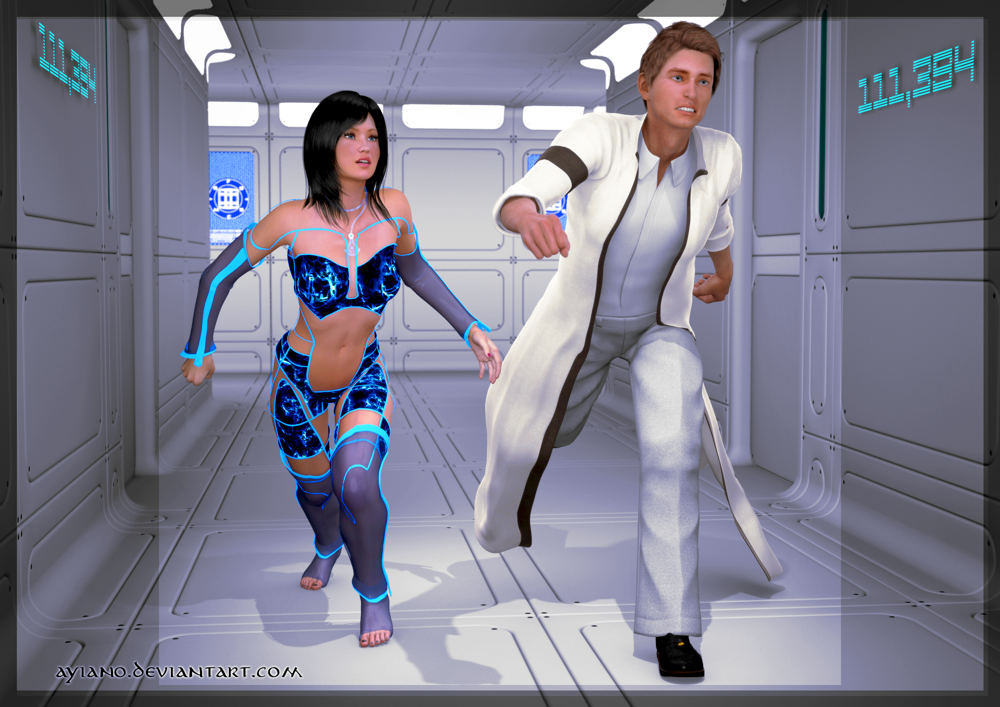
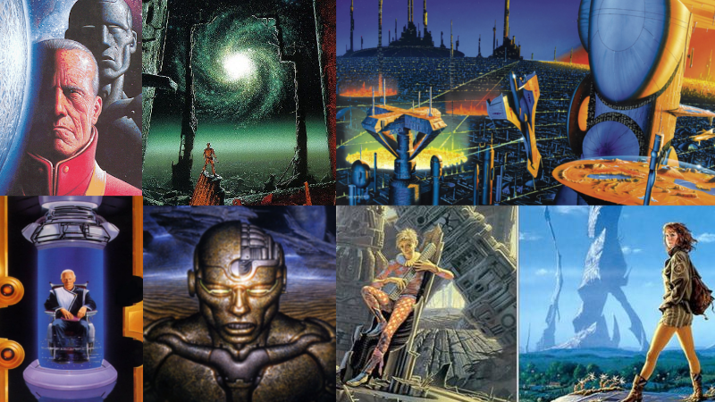
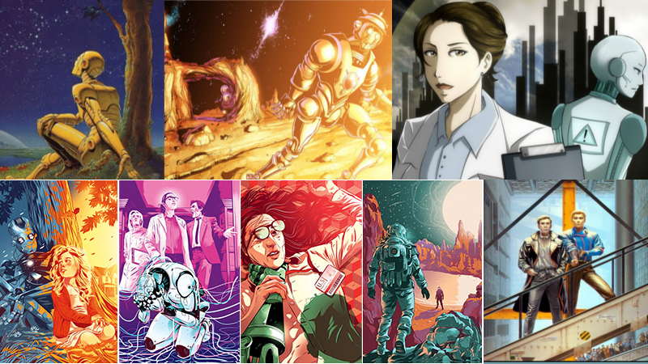
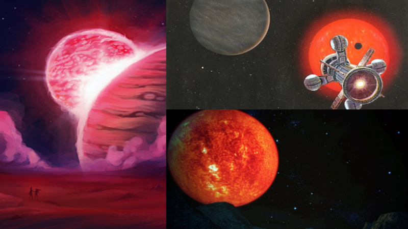
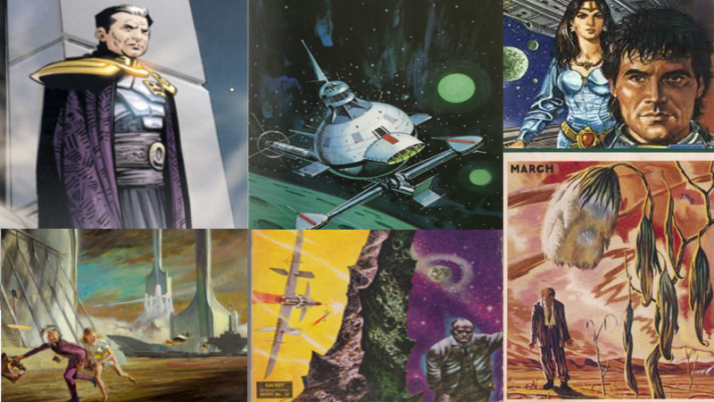

A table of the Asimov's books I have read so far is below. When you start reading the books of Asimov,
you may be confused about what order you will read, or you may not know which reading order will be better for you.
When you do research on the Internet, you'll see a lot of discussions about it. The order that I read is in the table below.
I am pleased with this reading order and I would recommend. I also gave the Turkish names of these books and the Turkish publishing houses where they can be found for people who may interest.
A table of the Asimov's books I have read so far is below. When you start reading the books of Asimov,
you may be confused about what order you will read, or you may not know which reading order will be better for you.
When you do research on the Internet, you'll see a lot of discussions about it. The order that I read is in the table below.
I am pleased with this reading order and I would recommend. I also gave the Turkish names of these books and the Turkish publishing houses where they can be found for people who may interest.
 You can also find short information about these books which I read in here.
You can also find short information about these books which I read in here.
| BOOKS I HAVE READ | ||||
| YEAR | SERIES | ORIGINAL NAME | TURKISH NAME | TURKISH PUBLISHING HOUSES |
| 1955 | Standalone Novels | The End of Eternity | Sonsuzluğun Sonu/Evrenin Çanları | Monokl |
| 1951 | Foundation Books-01 | Foundation | Vakıf/İmparatorluk | İthaki |
| 1952 | Foundation Books-02 | Foundation and Empire/The Man Who Upset the Universe | Vakıf ve İmparatorluk/Altın Galaksi | İthaki |
| 1953 | Foundation Books-03 | Second Foundation | İkinci Vakıf/Gizli Tanrılar | İthaki |
| 1982 | Foundation Books-04 | Foundation's Edge | Vakıf'ın Sınırı/Galaksi Çöküyor | İthaki |
| 1950 | Robot Books-00 | I, Robot | Ben, Robot/Ben Bir Robotum/Robotlar | Altın |
| 1989 | Standalone Novels | Nemesis | İntikam Tanrıçası | Altın |
| 1954 | Robot Books-01 | The Caves of Steel | Çelik Mağaralar/Ölü Gezegen | Altın |
| 1957 | Robot Books-02 | The Naked Sun | Güneşin Tanrıları/Çıplak Güneş | Altın |
| 1983 | Robot Books-04 | The Robots of Dawn | Şafağın Robotları | Altın |
| 1985 | Robot Books-05 | Robots and Empire | Kurtarıcı | Altın |
| 1951 | Galactic Empire Books-02 | The Stars, Like Dust/The Rebellious Stars | Sonsuzun Tohumları/Asi Gezegen Tyrran | Altın |
| 1962 | Galactic Empire Books-03 | The Current of Space | Tanrılar ve İmparatorlar/Kainat Fatihi | Altın |
| 1950 | Galactic Empire Books-01 | Pebble in the Sky | Zamandan Kaçış/Uğursuz Gezegen Galactika | Altın |
| 1986 | Foundation Books-05 | Foundation and Earth | Vakıf ve Dünya | İthaki |
| 1988 | Foundation Books-06 | Prelude to Foundation | Vakıf Kurulurken/İmparatorluk Kurulurken | İthaki |
| 1993 | Foundation Books-07 | Forward the Foundation | Vakıf İleri/Erişilmez İmparatorluk | İthaki |
| 1. THE END OF ETERNITY |
|  |
This book is the first book that allows me to enter Asimov's universe. So this book is very special for me, and it is one of my favorite Asimov's books. This book can be accepted as a founding or beginning book of the Foundation Series. In other words, it serves as a gateway to this universe. In the book, the time travel had been invented. Thus, by going into the future where the sun has been transformed into a supernova, an "Infinity Unit(Outside Time or Eternity)" has been established by using the enormous energy that the sun has spread around it. The members of this unit are known as "Eternals". This unit intervenes in "time" to help humanity when it is necessary. These small interventions, which are made by going to the future or past, are called the "reality changes", and performed by experts called "technicians". Technicians are responsible for the reality changes. But there are some rules. These rules prevent them from earlier travel to the Primitive times before the 27th century, when the temporal field powering Eternity was established, to prevent accidental damage to pre-temporal history. Also, It is forbidden for technicians to go too far in the future centuries. These centuries are called Hidden Centuries and cover 70,000-150,000th centuries. The Earth is empty by the 150,000th century. It is not known why the world is empty in the 150,000th century and why the hidden centuries cannot be accessed. The desire to discover this mystery is one of the reasons why the book is immersive. Andrew Harlan, our main character of the book, is an Eternal and one of technicians and he is a specialist at implementing reality changes. Harlan's work requires they stay for a week in the 482nd century with non-Eternal Noÿs Lambent, a member of the aristocracy of that time. Harlan falls in love with her. And things start to change after this moment. Unexpected situations and various mysteries occur. And Harlan must make big decisions that can change the whole future and the Eternity. It is almost impossible to leave reading when you start to read this book. When the mysteries of the book begin to dissolve one by one, It is guaranteed that you will feel a huge surprise and pleasure. |
| 2. FOUNDATION BOOKS |
|  |
|
The Foundation series consists of seven books.
This series can be considered as the masterpiece written by Isaac Asimov in science fiction. The foundation was originally published in May 8, 1965 to January 1950, in the form of 8 short stories in Astounding Magazine. The original serie consisted of the first three books in the list above. But later, since the books were much admired, in 1981, Asimov was persuaded to write the continuance books. With the published of the new books for the beginning and end of the original series, the universe that Asimov was trying to create was completed. The basis of the whole series bases on the predictions of Hari Seldon's psychohistory. Hari Seldon ,the main characters of the first book, spent his whole life on developing it. Due to using societies action laws, the future can be predicted at large scales thanks to this science. As a result of his research, Hari Seldon saw that the Galactic Empire that ruled the entire Milky Way is collapsing and this collapse was inevitable, and he foresaw that a 30,000-year-old "Dark Age" would occur. Seldon also calculated that if the necessary arrangements were made, this period could be reduced to a period of 1,000 years. Therefore, he decided to establish a foundation at one end corner of Galaxy. But there were some difficulties. The whole series is about the actualization of this process. When you read these books, you begin to understand all the secrets and mysteries underlying establish of the Foundation. You may encounter events that you have never guessed. |
| 3. ROBOT BOOKS |
|  |
|
The Robot Series consists of six books.
In "I,Robot", our main character is a robot psychologist named "Susan Calvin". This book is like an introduction to the Robot Series. In this book, Susan Calvin's memories about the "three main robot laws" are told. These three laws are very significant laws for both robots and humans. The events and problems that arise when these three laws contradict each other, and the rational solutions of Susan Calvin for these problems are the subject of the book. In order to understand the process of the robots' brain and these three main Robot Laws, this starting book should be read. Actually, The Robot Series starts from "The Caves of Steel". This book and the next three books are a continuation of each other. In these books, The adventures of our brave detective "Elijah Baley" and his robot friend "R.Daneel Olivaw" are told. R. Daneel Olivaw is the first humanoid robot who has been created and he has a great importance in the series. The events and mysteries which occurs on the planets where Baley and Olivaw go are transferred to the reader. In next incoming books, we meet "R. Giskard Reventlov". Giskard is also a robot and one of the most interesting and key characters of the Asimov universe. The last book is like a transition book to the Empire Series. The Robot Series is necessary to read for the universe created by Asimov. Asimov then combined this series with the Foundation Series. In addition, the Robot Series contains different planets. These planets have different societies and cultures. When you see these differences, it is not possible not to admire the imagination of Asimov. |
| 4. NEMESIS |
|  |
|
In the time period of this book, the human population in the Earth has increased enormously and the Earth has become almost uninhabitable. In the Earth, there are lots of difficulties in finding resources for humans and the social order is almost collapsing. Some of the communities which have advanced technology realized this situation and they established "colonies (space stations)" in various places of the orbit of the Solar System. Thus, these colonies became partially independent of the Earth. One of these colonies is "Rotor". "Janus Pitt", the idealist president of Rotor, wants to break their all connections from the Earth, and develop a new model of civilization in a distant corner of the Galaxy. One day, one of Rotor's successful scientists, "Eugenia Insigna Fisher", told Janus Pitt that she had found another sun two light years away. She named it "Nemesis" by taking inspiration from the mythology. This was the first step for Janus Pitt to realize his dreams. But they couldnot do it with the technology they had. Therefore, he encouraged his scientists to develop the "hyper-assistance technology" known by the people out of space. With the development of this technology, it became possible to go to another solar system for the Rotor. Then, Rotor leaved from the Solar System without informing anyone. After this leaving, important events begin to occur. Rotor encounters lots of interesting events in the new solar system. And there is a big danger for the Earth and the Rotor. At the end of all these events, what surprises are waiting for Rotor? This book is also important because it makes various references to the Foundation Series. |
| 5. GALACTIC EMPIRE BOOKS |
|  |
|
The Galactic Empire Series consists of three books.
These stories are set in the same future as the Foundation series. These three books are not directly related to each other, even though they are in the series, and different events on different planets are told in these books. But these books should be read to understand the history of the Galactic Empire, the Earth and the Trantor. At that time, Trantor is the planet that ruled the entire Galaxy. In addition, these books tells the formation of some special and significant technologies like "hyperdrive", "blaster pistols", "neuronic whips", the possible invention of the "Visi-Sonor" in the Asimov universe. These three books have a great importance in order to learn the fate of the Galactic Empire and the Earth. You can also complete some of the missing pieces in the Asimov universe with the help of these three books. As with all the stories of Asimov, these stories will also pull you into them. |
NOTES:
- Resources that I have got help, thank you!